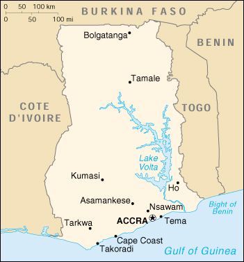

|
Ghana | |
| Introduction Geography People Government Economy Communications Transportation Military Transnational Issues | ||
|  | ||
| Ghana | Introduction | Top of Page |
| Background: | Formed from the merger of the British colony of the Gold Coast and the Togoland trust territory, Ghana in 1957 became the first country in colonial Africa to gain its independence. A long series of coups resulted in the suspension of the constitution in 1981 and the banning of political parties. A new constitution, restoring multiparty politics, was approved in 1992. Lt. Jerry RAWLINGS, head of state since 1981, won presidential elections in 1992 and 1996, but was constitutionally prevented from running for a third term in 2000. He was succeeded by John KUFUOR. |
| Ghana | Geography | Top of Page |
| Location: | Western Africa, bordering the Gulf of Guinea, between Cote d'Ivoire and Togo |
| Geographic coordinates: | 8 00 N, 2 00 W |
| Map references: | Africa |
| Area: |
total:
238,540 sq km
land: 230,020 sq km water: 8,520 sq km |
| Area - comparative: | slightly smaller than Oregon |
| Land boundaries: |
total:
2,093 km
border countries: Burkina Faso 548 km, Cote d'Ivoire 668 km, Togo 877 km |
| Coastline: | 539 km |
| Maritime claims: |
contiguous zone:
24 NM
continental shelf: 200 NM exclusive economic zone: 200 NM territorial sea: 12 NM |
| Climate: | tropical; warm and comparatively dry along southeast coast; hot and humid in southwest; hot and dry in north |
| Terrain: | mostly low plains with dissected plateau in south-central area |
| Elevation extremes: |
lowest point:
Atlantic Ocean 0 m
highest point: Mount Afadjato 880 m |
| Natural resources: | gold, timber, industrial diamonds, bauxite, manganese, fish, rubber, hydropower |
| Land use: |
arable land:
12%
permanent crops: 7% permanent pastures: 22% forests and woodland: 35% other: 24% (1993 est.) |
| Irrigated land: | 60 sq km (1993 est.) |
| Natural hazards: | dry, dusty, harmattan winds occur from January to March; droughts |
| Environment - current issues: | recent drought in north severely affecting agricultural activities; deforestation; overgrazing; soil erosion; poaching and habitat destruction threatens wildlife populations; water pollution; inadequate supplies of potable water |
| Environment - international agreements: |
party to:
Biodiversity, Climate Change, Desertification, Endangered Species, Environmental Modification, Law of the Sea, Nuclear Test Ban, Ozone Layer Protection, Ship Pollution, Tropical Timber 83, Tropical Timber 94, Wetlands
signed, but not ratified: Marine Life Conservation |
| Geography - note: | Lake Volta is the world's largest artificial lake; northeasterly harmattan wind (January to March) |
| Ghana | People | Top of Page |
| Population: |
19,894,014
note: estimates for this country explicitly take into account the effects of excess mortality due to AIDS; this can result in lower life expectancy, higher infant mortality and death rates, lower population and growth rates, and changes in the distribution of population by age and sex than would otherwise be expected (July 2001 est.) |
| Age structure: |
0-14 years:
41.18% (male 4,123,317; female 4,068,786)
15-64 years: 55.35% (male 5,455,577; female 5,555,278) 65 years and over: 3.47% (male 328,809; female 362,247) (2001 est.) |
| Population growth rate: | 1.79% (2001 est.) |
| Birth rate: | 28.95 births/1,000 population (2001 est.) |
| Death rate: | 10.26 deaths/1,000 population (2001 est.) |
| Net migration rate: | -0.83 migrant(s)/1,000 population (2001 est.) |
| Sex ratio: |
at birth:
1.03 male(s)/female
under 15 years: 1.01 male(s)/female 15-64 years: 0.98 male(s)/female 65 years and over: 0.91 male(s)/female total population: 0.99 male(s)/female (2001 est.) |
| Infant mortality rate: | 56.54 deaths/1,000 live births (2001 est.) |
| Life expectancy at birth: |
total population:
57.24 years
male: 55.86 years female: 58.66 years (2001 est.) |
| Total fertility rate: | 3.82 children born/woman (2001 est.) |
| HIV/AIDS - adult prevalence rate: | 3.6% (1999 est.) |
| HIV/AIDS - people living with HIV/AIDS: | 340,000 (1999 est.) |
| HIV/AIDS - deaths: | 33,000 (1999 est.) |
| Nationality: |
noun:
Ghanaian(s)
adjective: Ghanaian |
| Ethnic groups: | black African 99.8% (major tribes - Akan 44%, Moshi-Dagomba 16%, Ewe 13%, Ga 8%), European and other 0.2% |
| Religions: | indigenous beliefs 38%, Muslim 30%, Christian 24%, other 8% |
| Languages: | English (official), African languages (including Akan, Moshi-Dagomba, Ewe, and Ga) |
| Literacy: |
definition:
age 15 and over can read and write
total population: 64.5% male: 75.9% female: 53.5% (1995 est.) |
| Ghana | Government | Top of Page |
| Country name: |
conventional long form:
Republic of Ghana
conventional short form: Ghana former: Gold Coast |
| Government type: | constitutional democracy |
| Capital: | Accra |
| Administrative divisions: | 10 regions; Ashanti, Brong-Ahafo, Central, Eastern, Greater Accra, Northern, Upper East, Upper West, Volta, Western |
| Independence: | 6 March 1957 (from UK) |
| National holiday: | Independence Day, 6 March (1957) |
| Constitution: | new constitution approved 28 April 1992 |
| Legal system: | based on English common law and customary law; has not accepted compulsory ICJ jurisdiction |
| Suffrage: | 18 years of age; universal |
| Executive branch: |
chief of state:
President John Agyekum KUFUOR (since 7 January 2001); Vice President Alhaji Aliu MAHAMA (since 7 January 2001); note - the president is both the chief of state and head of government
head of government: President John Agyekum KUFUOR (since 7 January 2001); Vice President Alhaji Aliu MAHAMA (since 7 January 2001); note - the president is both the chief of state and head of government cabinet: Council of Ministers; president nominates members subject to approval by Parliament elections: president and vice president elected on the same ticket by popular vote for four-year terms; election last held 7 and 28 December 2000 (next to be held NA December 2004) election results: John Agyekum KUFUOR elected president in runoff; percent of vote - John KUFUOR 56.4%, John Atta MILLS 43.6% |
| Legislative branch: |
unicameral Parliament (200 seats; members are elected by direct popular vote to serve four-year terms)
elections: last held 7 December 2000 (next to be held NA December 2004) election results: percent of vote by party - NA%; seats by party - NPP 100, NDC 92, PNC 3, CPP 1, independents 4 |
| Judicial branch: | Supreme Court |
| Political parties and leaders: | Every Ghanaian Living Everywhere or EGLE [Owuraku AMOFA, chairman]; National Convention Party or NCP [Sarpong KUMA-KUMA]; National Democratic Congress or NDC [Dr. Huudu YAHAYA, general secretary]; New Patriotic Party or NPP [Samuel Arthur ODOI-SYKES]; People's Convention Party or PCP [P. K. DONKOH-AYIFI, acting chairman]; People's Heritage Party or PHP [Emmanuel Alexander ERSKINE]; People's National Convention or PNC [Edward MAHAMA] |
| Political pressure groups and leaders: | NA |
| International organization participation: | ABEDA, ACP, AfDB, C, CCC, ECA, ECOWAS, FAO, G-24, G-77, IAEA, IBRD, ICAO, ICC, ICFTU, ICRM, IDA, IFAD, IFC, IFRCS, ILO, IMF, IMO, Inmarsat, Intelsat, Interpol, IOC, IOM (observer), ISO, ITU, MINURSO, NAM, OAS (observer), OAU, OPCW, UN, UNCTAD, UNESCO, UNIDO, UNIFIL, UNIKOM, UNITAR, UNMEE, UNMIBH, UNMIK, UNMOP, UNMOT, UNTAET, UNU, UPU, WCL, WFTU, WHO, WIPO, WMO, WToO, WTrO |
| Diplomatic representation in the US: |
chief of mission:
Ambassador Kobena KOOMSON
chancery: 3512 International Drive NW, Washington, DC 20008 telephone: [1] (202) 686-4520 FAX: [1] (202) 686-4527 consulate(s) general: New York |
| Diplomatic representation from the US: |
chief of mission:
Ambassador Kathryn D. ROBINSON
embassy: Ring Road East, East of Danquah Circle, Accra mailing address: P. O. Box 194, Accra telephone: [233] (21) 775348 FAX: [233] (21) 776008 |
| Flag description: | three equal horizontal bands of red (top), yellow, and green with a large black five-pointed star centered in the yellow band; uses the popular pan-African colors of Ethiopia; similar to the flag of Bolivia, which has a coat of arms centered in the yellow band |
| Ghana | Economy | Top of Page |
| Economy - overview: | Well endowed with natural resources, Ghana has twice the per capita output of the poorer countries in West Africa. Even so, Ghana remains heavily dependent on international financial and technical assistance. Gold, timber, and cocoa production are major sources of foreign exchange. The domestic economy continues to revolve around subsistence agriculture, which accounts for 36% of GDP and employs 60% of the work force, mainly small landholders. In 1995-97, Ghana made mixed progress under a three-year structural adjustment program in cooperation with the IMF. On the minus side, public sector wage increases and regional peacekeeping commitments have led to continued inflationary deficit financing, depreciation of the cedi, and rising public discontent with Ghana's austerity measures. Political uncertainty and a depressed cocoa market led to disappointing growth in 2000. A rebound in the cocoa market should push growth over 4% in 2001-02. |
| GDP: | purchasing power parity - $37.4 billion (2000 est.) |
| GDP - real growth rate: | 3% (2000 est.) |
| GDP - per capita: | purchasing power parity - $1,900 (2000 est.) |
| GDP - composition by sector: |
agriculture:
36%
industry: 25% services: 39% (2000 est.) |
| Population below poverty line: | 31.4% (1992 est.) |
| Household income or consumption by percentage share: |
lowest 10%:
3.6%
highest 10%: 26.1% (1997) |
| Inflation rate (consumer prices): | 22.8% (2000 est.) |
| Labor force: | 9 million (2000 est.) |
| Labor force - by occupation: | agriculture 60%, industry 15%, services 25% (1999 est.) |
| Unemployment rate: | 20% (1997 est.) |
| Budget: |
revenues:
$1.39 billion
expenditures: $1.47 billion, including capital expenditures of $370 million (1996 est.) |
| Industries: | mining, lumbering, light manufacturing, aluminum smelting, food processing |
| Industrial production growth rate: | 4.2% (1996 est.) |
| Electricity - production: | 5.466 billion kWh (1999) |
| Electricity - production by source: |
fossil fuel:
26.82%
hydro: 73.18% nuclear: 0% other: 0% (1999) |
| Electricity - consumption: | 5.573 billion kWh (1999) |
| Electricity - exports: | 400 million kWh (1999) |
| Electricity - imports: | 890 million kWh (1999) |
| Agriculture - products: | cocoa, rice, coffee, cassava (tapioca), peanuts, corn, shea nuts, bananas; timber |
| Exports: | $1.6 billion (f.o.b., 2000) |
| Exports - commodities: | gold, cocoa, timber, tuna, bauxite, aluminum, manganese ore, diamonds |
| Exports - partners: | Togo, UK, Italy, Netherlands, Germany, US, France (1998) |
| Imports: | $2.2 billion (f.o.b., 2000) |
| Imports - commodities: | capital equipment, petroleum, foodstuffs |
| Imports - partners: | UK, Nigeria, US, Germany, Italy, Spain (1998) |
| Debt - external: | $7 billion (1999 est.) |
| Economic aid - recipient: | $477.3 million (1995) |
| Currency: | cedi (GHC) |
| Currency code: | GHC |
| Exchange rates: | cedis per US dollar - 6,895.77 (January 2001), 5,321.68 (2000), 2,647.32 (1999), 2,314.15 (1998), 2,050.17 (1997), 1,637.23 (1996) |
| Fiscal year: | calendar year |
| Ghana | Communications | Top of Page |
| Telephones - main lines in use: | 200,000 (1998) |
| Telephones - mobile cellular: | 30,000 (yearend 1998) |
| Telephone system: |
general assessment:
poor to fair system; Internet accessible; many rural communities not yet connected; expansion of services is underway
domestic: primarily microwave radio relay; wireless local loop has been installed international: satellite earth stations - 4 Intelsat (Atlantic Ocean); microwave radio relay link to Panaftel system connects Ghana to its neighbors |
| Radio broadcast stations: | AM 0, FM 18, shortwave 3 (1999) |
| Radios: | 4.4 million (1997) |
| Television broadcast stations: | 11 (1999) |
| Televisions: | 1.73 million (1997) |
| Internet country code: | .gh |
| Internet Service Providers (ISPs): | 1 (2000) |
| Internet users: | 20,000 (2000) |
| Ghana | Transportation | Top of Page |
| Railways: |
total:
953 km (undergoing major rehabilitation)
narrow gauge: 953 km 1.067-m gauge (32 km double track) (1997 est.) |
| Highways: |
total:
39,409 km
paved: 11,653 km (including 30 km of expressways) unpaved: 27,756 km (1997) |
| Waterways: |
1,293 km
note: Volta, Ankobra, and Tano Rivers provide 168 km of perennial navigation for launches and lighters; Lake Volta provides 1,125 km of arterial and feeder waterways |
| Pipelines: | 0 km |
| Ports and harbors: | Takoradi, Tema |
| Merchant marine: |
total:
6 ships (1,000 GRT or over) totaling 13,484 GRT/18,583 DWT
ships by type: petroleum tanker 2, refrigerated cargo 4 (2000 est.) |
| Airports: | 12 (2000 est.) |
| Airports - with paved runways: |
total:
6
2,438 to 3,047 m: 1 1,524 to 2,437 m: 3 914 to 1,523 m: 2 (2000 est.) |
| Airports - with unpaved runways: |
total:
6
1,524 to 2,437 m: 1 914 to 1,523 m: 3 under 914 m: 2 (2000 est.) |
| Ghana | Military | Top of Page |
| Military branches: | Army, Navy, Air Force, National Police Force, Palace Guard, Civil Defense |
| Military manpower - military age: | 18 years of age |
| Military manpower - availability: | males age 15-49: 4,890,483 (2001 est.) |
| Military manpower - fit for military service: | males age 15-49: 2,713,584 (2001 est.) |
| Military manpower - reaching military age annually: | males: 213,237 (2001 est.) |
| Military expenditures - dollar figure: | $53 million (FY99) |
| Military expenditures - percent of GDP: | 0.7% (FY99) |
| Ghana | Transnational Issues | Top of Page |
| Disputes - international: | none |
| Illicit drugs: | illicit producer of cannabis for the international drug trade; transit hub for Southwest and Southeast Asian heroin and South American cocaine destined for Europe and the US |
{kind=link}
{kind=link}